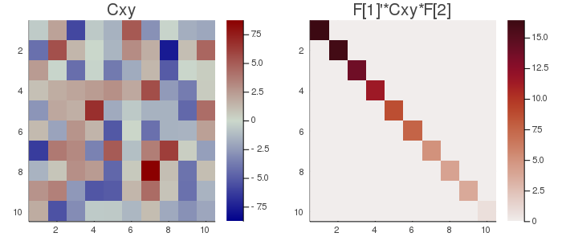

MCA
Maximum Covariance Analysis is obtained by singular-value decomposition. It can be conceived as the multivariate extension of covariance and as the bilinear version of PCA; if PCA diagonalizes the covariance matrix of a data set, MCA diagonalized the cross-covariance matrix of two data sets. It corresponds to the situation $m=2$ (two datasets) and $k=1$ (one observation).
Let $X$ and $Y$ be two $n_x⋅t$ and $n_y⋅t$ data matrices, where $n_x$ and $n_y$ are the number of variables in $X$ and $Y$, respectively and $t$ the number of samples. We assume that the samples in $X$ and $Y$ are synchronized. Let $C_{xy}=\frac{1}{t}X^HY$ be the $n_x⋅n_y$ cross-covariance matrix. MCA seeks two orthogonal matrices $U$ and $V$ such that
$U_x^{H}C_{xy}U_y=Λ$, $\hspace{1cm}$ [mca.1]
where $Λ$ is a $n⋅n$ diagonal matrix, with $n=min(n_x, n_y)$. The first components (rows) of $U_x^{H}X$ and $U_y^{H}Y$ hold the linear combination of $X$ and $Y$ with maximal covariance, the second the linear combination with maximal residual covariance and so on, subject to constraint $U_x^{H}U_x=I$ and $U_y^{H}U_x=I$. If $n_x=n_y$, $U_x$ and $U_y$ are both square, hence it holds also $U_xU_x^{H}=I$ and $U_yU_y^{H}=I$, otherwise this holds only for one of them.
It should be kept in mind that MCA is sensitive to the amplitude of each process, since the covariance is maximized and not the correlation as in CCA. Threfore, if the amplitude of the two processes is not homegeneous, the covariance will be driven by the process with highest amplitude.
The accumulated regularized eigenvalues (arev) for the MCA are defined as
$σ_j=\sum_{i=1}^j{σ_i}$, for $j=[1 \ldots n]$, $\hspace{1cm}$ [mca.2]
where $σ_i$ is given by
$σ_p=\frac{\sum_{i=1}^pλ_i}{σ_{TOT}}$ $\hspace{1cm}$ [mca.3]
and $λ_i$ are the singular values in $Λ$ of [mca.1].
For setting the subspace dimension $p$ manually, set the eVar optional keyword argument of the MCA constructors either to an integer or to a real number, this latter establishing $p$ in conjunction with argument eVarMeth using the arev vector (see subspace dimension). By default, eVar is set to 0.999.
Solution
The MCA solution is given by the singular value decoposition of $C_{xy}$
$\textrm{SVD}(C_{xy})=U_xΛU_y^{H}$.
It is worth mentioning that
$\widetilde{U}_x\widetilde{Λ}\widetilde{U}_y^H$,
where $\widetilde{U}_x=[u_{x1} \ldots u_{xp}]$ is the matrix holding the first $p<n_x$ left singular vectors, $\widetilde{U}_y=[u_{y1} \ldots u_{yp}]$ is the matrix holding the first $p<n_y$ right singular vectors and $\widetilde{Λ}$ is the leading $p⋅p$ block of $Λ$, is the best approximant to $C_{xy}$ with rank $p$ in the least-squares sense (Good, 1969)🎓.
Constructors
Three constructors are available (see here below). The constructed LinearFilter object holding the MCA will have fields:
.F[1]: matrix $\widetilde{U}_x$ with orthonormal columns holding the first $p$ left singular vectors in $U_x$.
.F[2]: matrix $\widetilde{U}_y$ with orthonormal columns holding the first $p$ right singular vectors in $U_y$.
.iF[1]: the (conjugate) transpose of .F[1]
.iF[2]: the (conjugate) transpose of .F[2]
.D: the leading $p⋅p$ block of $Λ$, i.e., the singular values associated to .F in diagonal form.
.eVar: the explained variance for the chosen value of $p$, defined in [mca.3].
.ev: the vector diag(Λ) holding all $n$ singular values.
.arev: the accumulated regularized eigenvalues, defined in [mca.2].
Diagonalizations.mca — Function(1)
function mca(Cxy :: Mat;
eVar :: TeVaro = ○,
eVarMeth :: Function = searchsortedfirst,
simple :: Bool = false)
(2)
function mca(X::Mat, Y::Mat;
dims :: Into = ○,
meanX :: Tmean = 0,
meanY :: Tmean = 0,
wXY :: Tw = ○,
eVar :: TeVaro = ○,
eVarMeth :: Function = searchsortedfirst,
simple :: Bool = false)
(3)
function mca(𝐗::VecMat, 𝐘::VecMat;
dims :: Into = ○,
meanX :: Into = 0,
meanY :: Into = 0,
eVar :: TeVaro = ○,
eVarMeth :: Function = searchsortedfirst,
simple :: Bool = false)Return a LinearFilter object:
(1) Maximum covariance analysis with covariance matrix Cxy of dimension $n_x⋅n_y$ as input.
Differently from PCA and Whitening, Cxy is a generic Matrix object since it is not symmetric/Hermitian, left alone square.
eVar and eVarMeth are keyword optional arguments for defining the subspace dimension $p$ using the .arev vector given by Eq. [mca.2].
The default values are:
eVar=0.999eVarMeth=searchsortedfirst
If simple is set to true, $p$ is set equal to $min(n_x, n_y)$ and only the fields .F and .iF are written in the constructed object. This option is provided for low-level work when you don't need to define a subspace dimension or you want to define it by your own methods.
(2) Maximum covariance analysis with data matrices X and Y as input.
X and Y are real or complex data matrices.
dims, meanX, meanY and wXY are optional keyword arguments to regulate the estimation of the cross-covariance matrix $C_{xy}$. Particularly (see covariance matrix estimations),
meanXis themeanargument for data matrixX.meanYis themeanargument for data matrixY.wXYis the weight argument for estimating a weighted cross-covariance matrix $C_{XY}$.
Once the cross-covariance matrix estimated, method (1) is invoked with optional keyword arguments eVar, eVarMeth and simple. See method (1) for details.
(3) Maximum covariance analysis with two vectors of data matrices 𝐗 and 𝐘 as input. 𝐗 and 𝐘 must hold the same number of matrices and corresponding pairs of matrices therein must comprise the same number of samples.
dims, meanX and meanY are optional keyword arguments to regulate the estimation of the cross-covariance matrices for all pairs of corresponding data matrices in 𝐗 and 𝐘. See method (2) and covariance matrix estimations.
The arithmetic mean of these cross-covariance matrices is computed and method (1) is invoked with optional keyword arguments eVar, eVarMeth and simple. See method (1) for details.
See also: PCA, CCA, gMCA, mAJD.
Examples:
using Diagonalizations, LinearAlgebra, PosDefManifold, Test
n, t=10, 100
X=genDataMatrix(n, t)
Y=genDataMatrix(n, t)
Cx=Symmetric((X*X')/t)
Cy=Symmetric((Y*Y')/t)
Cxy=(X*Y')/t
# Method (1)
mC=mca(Cxy, simple=true)
@test Cxy≈mC.F[1]*mC.D*mC.F[2]'
D=mC.F[1]'Cxy*mC.F[2]
@test norm(D-Diagonal(D))+1≈1.
# Method (2)
mXY=mca(X, Y, simple=true)
D=mXY.F[1]'*Cxy*mXY.F[2]
@test norm(D-Diagonal(D))+1≈1.
@test mXY==mC
k=10
Xset=[genDataMatrix(n, t) for i=1:k]
Yset=[genDataMatrix(n, t) for i=1:k]
# Method (3)
# maximum covariance analysis of the average covariance and cross-covariance
m=mca(Xset, Yset)
# ... selecting subspace dimension allowing an explained variance = 0.5
m=mca(Xset, Yset; eVar=0.5)
# ... subtracting the mean from the matrices in Xset and Yset
m=mca(Xset, Yset; meanX=nothing, meanY=nothing, eVar=0.5)
# mca on the average of the covariance and cross-covariance matrices
# computed along dims 1
m=mca(Xset, Yset; dims=1, eVar=0.5)
# name of the filter
m.name
using Plots
# plot regularized accumulated eigenvalues
plot(m.arev)
# plot the original cross-covariance matrix and the rotated
# cross-covariance matrix
Cmax=maximum(abs.(Cxy));
h1 = heatmap(Cxy, clim=(-Cmax, Cmax), yflip=true, c=:bluesreds, title="Cxy");
D=mC.F[1]'*Cxy*mC.F[2];
Dmax=maximum(abs.(D));
h2 = heatmap(D, clim=(0, Dmax), yflip=true, c=:amp, title="F[1]'*Cxy*F[2]");
📈=plot(h1, h2, size=(700,300))